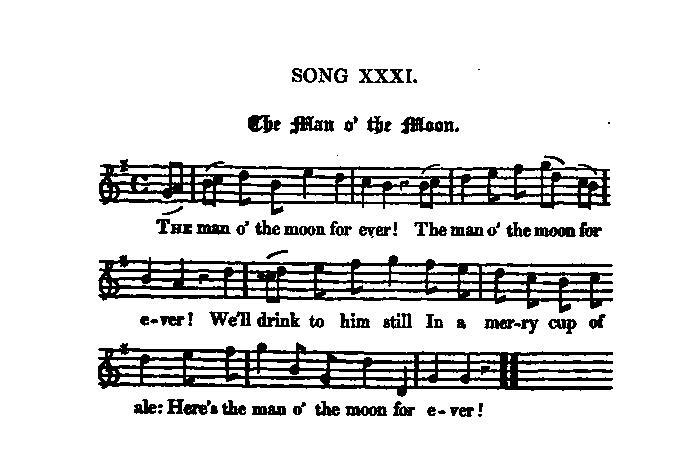

The Man on the Moon
L'homme de la lune
A cryptic song on the Old Pretender
Tune - Mélodie"The Man on the Moon"
from Hogg's "Jacobite Relics" 2nd Series N°31
Sequenced by Christian Souchon

|
To the tune:
"I got this song and air among some old papers belonging to Mr Orr of Alloa. Neither of them, I have reason to believe, were ever before published. There is an air of peculiar originality both in the song and tune." Source: Hogg's Jacobite Relics Volume II. According to Hogg's hint to song 101 of "Jacobite Relics", volume 2, "Will ye no come back again" should be sung to the same tune. |
A propos de la mélodie:
"Je tiens ce chant et cette mélodie, ainsi que d'autres vieux papiers, de M. Orr d'Alloa. J'ai tout lieu de croire que ni l'une ni l'autre n'ont jamais été publiés. On est frappé par l'originalité tant du chant que de la mélodie." Source: Hogg's Jacobite Relics Volume II. Selon l'indication de Hogg pour le chant 101 des "Reliques Jacobites", volume 2, on doit chanter "Ne reviendra-t-il jamais?" sur le même air. |

|
THE MAN O' THE MOON
1. The man o' the moon for ever! The man o' the moon for ever! We'll drink to him still In a merry cup of ale: Here's the man o' the moon for ever! 2. The man o' the moon, here's to him; How few there be that know him! But we'll drink to him still In a merry cup of ale. The man o' the moon, here's to him. 3. Brave man o' the moon, we hail thee; The true heart ne'er shall fail thee: For the day that's gane, And the day that's our ain, Brave man o' the moon, we hail thee. 4. We have seen the bear bestride thee, And the clouds of winter hide thee : But the moon is chang'd, And here we are rang'd: Brave man o' the moon, we bide thee. 5. The man o' the moon for ever! The man o' the moon for ever ! We'll drink to him still In a merry cup of ale: Here's the man o' the moon for ever! 6. We have griev'd the land should shun thee, And have never ceas'd to mourn thee; But for all our grief There was no relief. Now, man o' the moon, return thee. 7. There's Orion with his gowden belt, And Mars, that burning mover ; But of all the lights That rule the night, The man o' the moon for ever! Source: "The Jacobite Relics of Scotland, being the Songs, Airs and Legends of the Adherents to the House of Stuart" collected by James Hogg, published in Edinburgh by William Blackwood in 1819. |
L'HOMME DE LA LUNE
1. Vive l'homme de la lune! Je dis bien: vive l'homme de la lune! Buvons à sa santé Un plein bock d'ale doré! A toi donc, homme de la lune! 2. Sa santé nous intéresse. Même si bien peu pourtant le connaissent! Buvons à sa santé Un plein bock d'ale doré! Car sa santé nous intéresse! 3. O courageux sélénite, Coeur loyal toujours méprisa la fuite. Nous fumes ton soutien Hier; nous le serons demain Bien sûr, courageux sélénite! 4. La Grande Ourse qui te masque, Et les nuages d'hiver qui te cachent, Nouvelle lunaison, Sont vaincus: nous t'attendons Alignés, ici point de lâches! 5. Vive l'homme de la lune! Je dis bien: vive l'homme de la lune! Buvons à sa santé Un plein bock d'ale doré! A toi donc, homme de la lune! 6. Ta longue absence nous pèse Notre chagrin n'a jamais eu de cesse; Nulle consolation A notre amère affliction; Reviens-nous, tiens donc ta promesse! 7. L'écharpe d'Orion livide Ainsi que Mars, l'incandescent bolide, Sont de beaux luminaires, Mais celui que je préfère Est le sélénite impavide. (Trad. Christian Souchon(c)2010) |